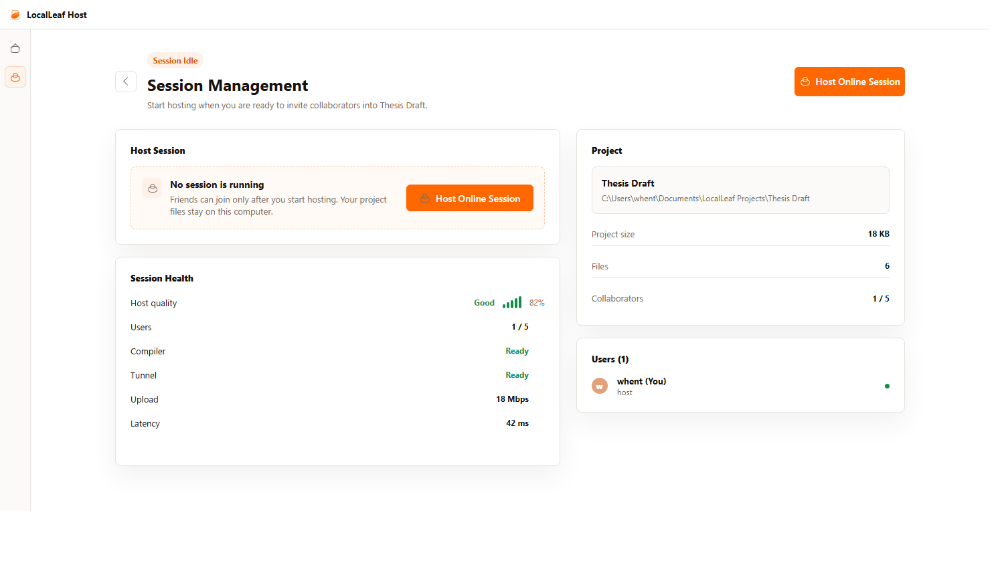
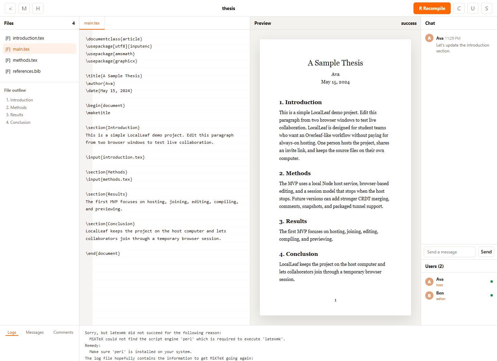

Real-time Collaboration
Edit together in the browser. Changes appear instantly for approved collaborators.
Private. Local. Fast.
LocalLeaf lets students collaborate on LaTeX projects in real time from one host computer. No accounts, no monthly server, no cloud storage.
Windows 10 / 11, macOS Apple Silicon, and macOS Intel. Latest release: v0.1.12

Designed for quick group reports, thesis drafts, lab notes, and class projects.
Edit together in the browser. Changes appear instantly for approved collaborators.
The host computer keeps the files. Sessions end when the host stops.
Runs as a simple desktop app with a browser-based editor for collaborators.
Start a session, copy the invite link, and approve friends as they join.
Open a project, edit files, compile, preview, chat, and export ZIP or PDF.

Built for student groups
LocalLeaf gives the host a simple control center and gives collaborators an Overleaf-style editor in the browser. The host stays in control of approvals, project files, compiler output, and session shutdown.
A simple session flow, with the host computer doing the work.
Choose an existing LaTeX folder or import a ZIP project.
LocalLeaf starts the local server, compiler, and tunnel.
Send the temporary link and approve join requests.
Everyone edits, chats, compiles, and previews from the browser.
When the host stops, the session closes and files stay on the host PC.
LocalLeaf is meant to remove the monthly hosting headache for student teams.
Download it, host from your computer, and collaborate without hidden fees.
Friends join with a browser link after the host approves them.
Projects live on the host computer, not on a third-party document cloud.
Quick answers
LocalLeaf is intentionally small: install, host, invite, edit, stop.
No. Collaborators join through a browser link after the host approves them.
The session ends. The project remains saved on the host computer.
Yes. The app bundles Tectonic and can compile supported LaTeX projects locally.
Start a project, share a link, and keep control of your work.